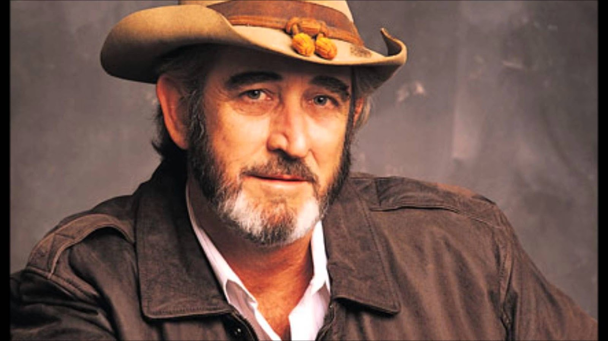

Don Williams
"Best country song singer."

Don williams during a life performance
The Stories Behind The Hit Songs of Don Williams.
- You’re My Best Friend: The song was written by Wayland Holyfield. It was released in 1975 from Williams’ album “You’re My Best Friend”. Holyfield helped Williams find a worldwide audience through the song. In addition, the song was Williams’ second No.1 hit on the Billboard Hot Country Singles. It is one of his signature songs.
- I Believe In You: “I Believe In You” was Williams’ eleventh song to top No.1 on the country chart. I was written by Roger Cook and Sam Hogin. The song was subtly political. It spent 12 weeks on the country chart. The song spread throughout Europe and Australia.
- Tulsa Time: Release in October 1978, the song was one of Williams’ rockin’ performance. It has different sounds. This is the song that was covered a few times by different artists. The song was written by Danny Flowers. It was Williams’ eighth number one on the country chart, spending a single week at number one and eleven weeks in the top 40.
- Lay Down Beside Me: Though Williams wrote the song, Kenny Rogers was the first to record the song in 1976. Rogers’ version was fine and smooth but it was Williams’ rendition that made it to the chart. It reached No. 3 on the Billboard Hot Country Singles and Tracks chart in 1979.
- If I Needed You: It was not Williams’ original song. It was Townes Van Zandt and the most romantic song he had done. William and Emmylou Harris made their collaboration in 1981. It’s his only collaboration that made it to the top. On the other hand, the song was written about Townes’ business partner and producers wife Anne Mittendorf Eggers.
For more information, go to countrythangdaily.